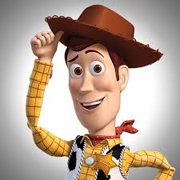
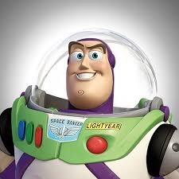
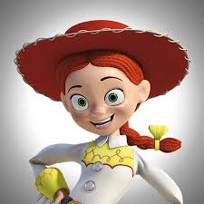
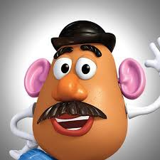
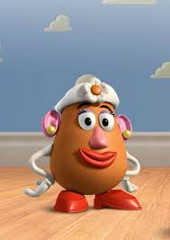

Cast : toystory

"Woody"
A pull-string cowboy doll and the leader of the toys.

"Buzz Light"
A space ranger action figure who believes he is a real space ranger at first.

"Jessie"
A yodeling cowgirl doll, part of Woody's Roundup gang.

"Mr.Potato Head"
A toy potato with detachable parts for his face.

"Mrs.potato Head"
Mr. Potato Head’s wife, also with detachable parts.

"Slinky Dog"
A dachshund with a slinky for a body.

"Rex"
A nervous, green, plastic Tyrannosaurus Rex.